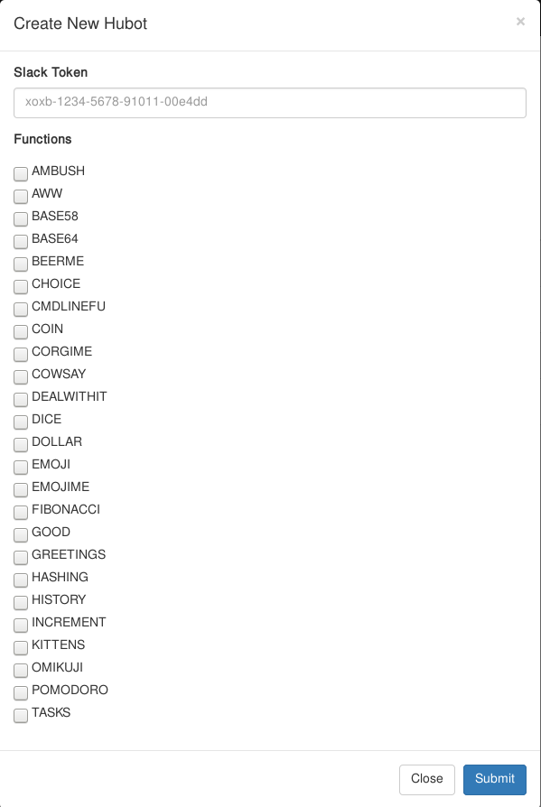

DO YOU USE SLACK?

DO YOU USE HUBOT?

digiporo #10 LT
HubotMaker(β)
@nasa9084Self Intro

名前: Masahiro Kitamura (@nasa9084)
所属: Hokkaido Univ.


ユーザ名
パスワード
を
作るだけ
SLACK TOKENを用意
→簡単作成
多彩なスクリプトを用意
チェックボックスで簡単追加
Hubotの起動・停止も1クリック！
one more thing...